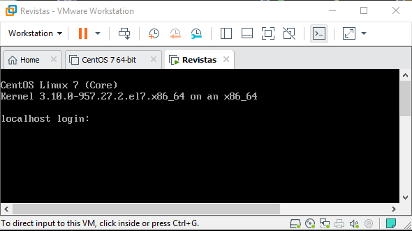
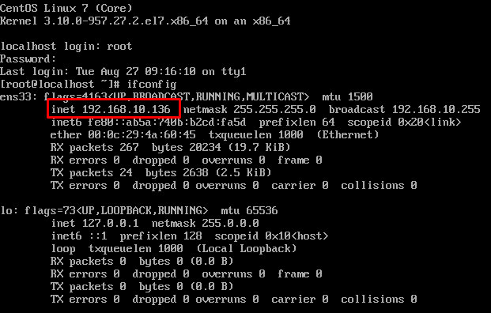

Revisando conectividad de la máquina virtual¶
Primeramente debe arrancar la máquina virtual, las claves de acceso son usuario: root contraseña: toor, una vez arrancada visualizara lo siguiente donde debe colocar sus accesos:
Dentro de la Shell, comprobaremos la conectividad de nuestra máquina virtual con el siguiente comando ifconfig si todo es correcto nos devolvera una dirección IP como puede ver en la imágen
